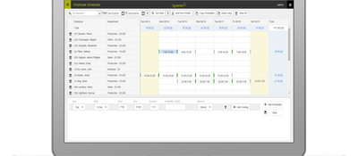
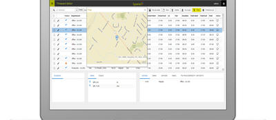
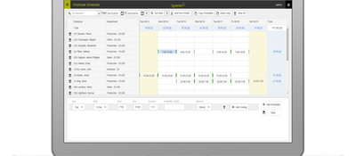
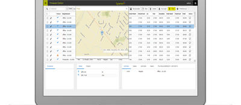

Synerion Mobile
Overview
C#, JQuery, SQL, Ajax, Telerik, templating, Active Reports
Role
Lead the development of Mobile Manager System website project. Architect the solution.
Validating and improving user and task workflow.
Design and architecture of the code with priority on enhanced user experience and better performance- consulting best approaches to development, training team new approaches to development- working closely with UX design, front-end development, and QA
Validating and improving user and task workflow.
Design and architecture of the code with priority on enhanced user experience and better performance- consulting best approaches to development, training team new approaches to development- working closely with UX design, front-end development, and QA
Challenge
Complex website logic with multiple grids and popups needs to be represented in a clear mobile interface. There is a need to create new workflows to reduce the amount of information displayed in each step.
Solution
Broken down common steps into short actionable screens. Used ajax callbacks to check possible and probable actions in every step. Used validate and autosave fields to minimize the number of clicks. Used heavy prediction and auto-populate based on user settings and previous patterns.
In the summary info-heavy screens, used highlight on all changed information and minimized possible action workflow routes.
In the summary info-heavy screens, used highlight on all changed information and minimized possible action workflow routes.
 


